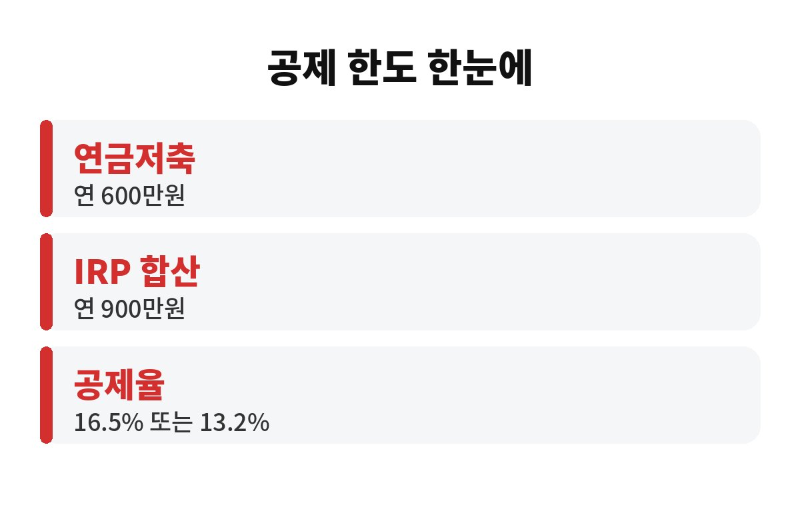
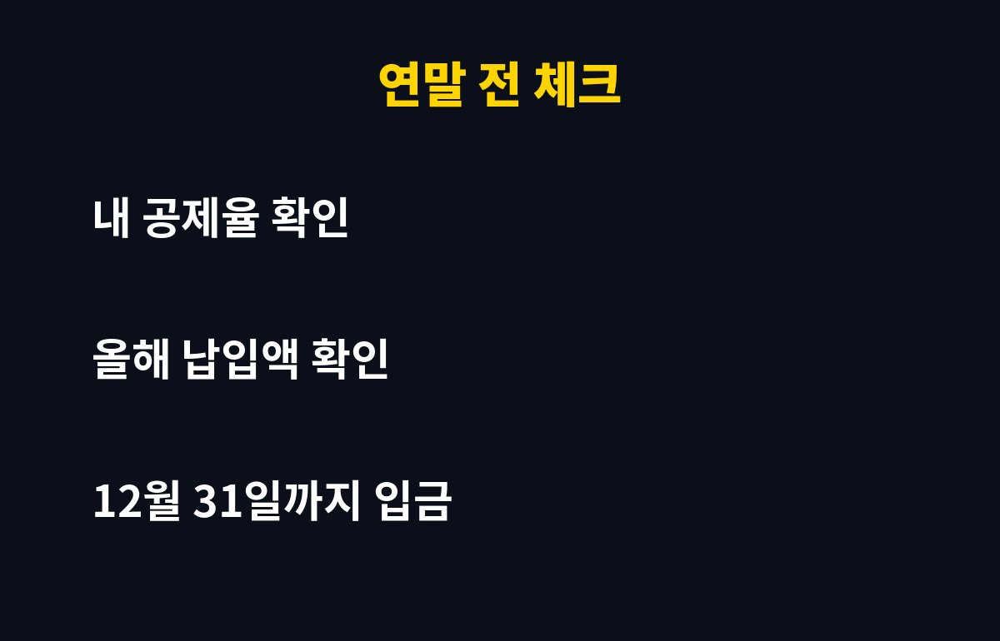

연금저축 세액공제는 연금저축과 IRP를 합쳐 연 900만 원까지 넣으면, 총급여 5,500만 원 이하 기준 최대 148만 5천 원(16.5%)을 돌려받을 수 있는 제도입니다. 올해 아직 한 푼도 안 넣은 직장인이라면, 남은 두 달 동안 얼마를 넣어야 손해를 안 볼지 궁금하시죠?
핵심은 두 가지 숫자예요. 하나는 납입 한도, 다른 하나는 공제율입니다. 연금저축만 따로 넣으면 연 600만 원까지 공제 대상이고, IRP(개인형 퇴직연금)를 함께 넣으면 합쳐서 연 900만 원까지 인정돼요.
공제율은 소득에 따라 달라집니다. 총급여 5,500만 원 이하(종합소득 4,500만 원 이하)는 16.5%, 그걸 넘으면 13.2%예요. 계산해 보면 이렇습니다.
900만 원 × 16.5% = 148만 5천 원, 900만 원 × 13.2% = 118만 8천 원. 연금저축 600만 원만 채우면 각각 99만 원, 79만 2천 원이에요. 월급에서 세금이 빠져나가는 입장에서는 꽤 큰 돈이죠.
참고로 공제율 기준은 내 상황에 따라 다를 수 있으니 국세청 홈택스나 회사 인사팀에서 한 번 확인해 보세요.
네, 이 부분이 가장 아쉬운 지점이에요. 세액공제는 그 해 12월 31일까지 실제로 납입한 금액만 인정됩니다. 해가 바뀐 뒤에 넣는 돈은 내년 몫이 되죠. 올해 분을 놓치면 올해 공제는 그대로 사라져요.
그래서 연말이 다가오면 많은 분들이 막판에 몰아서 넣어요. 다만 연말 마지막 날은 은행 이체나 증권사 입금 처리가 늦어질 수 있어서, 마지막 영업일 직전까지 미루지 않는 게 안전합니다. 넉넉하게 12월 중순쯤 끝내 두면 마음이 편해요.
둘 다 괜찮습니다. 올해 한도 안에서라면 한 번에 넣든 여러 번 나눠 넣든 공제 금액은 똑같아요. 다만 목돈이 한 번에 묶이는 게 부담스럽다면 남은 달 수로 나눠서 자동이체를 걸어 두는 방법도 있어요.
월급이 빠듯하다면 무리해서 한도를 다 채울 필요는 없어요. 연금저축은 원칙적으로 노후까지 묶이는 돈이라, 중간에 해지하면 공제받은 세금을 다시 토해내고 기타소득세가 붙을 수 있거든요. 환급이 커 보여도 생활비로 쓸 돈까지 넣는 건 금물입니다.
정답은 사람마다 달라요. 아래 표처럼 내 공제율에 따라 돌려받는 금액이 달라지니, 먼저 올해 이미 넣은 금액을 확인해 보세요.
| 납입액 | 16.5% 대상 | 13.2% 대상 |
| 300만 원 | 49만 5천 원 | 39만 6천 원 |
| 600만 원 | 99만 원 | 79만 2천 원 |
| 900만 원 | 148만 5천 원 | 118만 8천 원 |
이미 연금저축을 넣고 있다면 남은 한도만큼 IRP로 채우는 방법이 가장 흔해요. 한 가지 더, 회사 퇴직연금이나 다른 계좌에서 같은 해에 넣은 금액이 있으면 합산되니 중복해서 계산하지 않도록 주의하세요.
세액공제는 낸 세금에서 직접 깎아 주는 방식이라 체감이 큰 편이에요. 보통 연말정산을 마친 뒤 2월이나 3월 월급에 환급액이 합산되어 들어오는 경우가 많습니다. 회사마다 정산 일정이 조금씩 다르니 인사팀 공지를 꼭 확인해 보세요.
증빙은 금융회사가 국세청에 자동으로 보내 줘서, 홈택스 연말정산 간소화 서비스에서 납입 내역이 조회돼요. 다만 연말에 급하게 넣은 돈은 반영이 늦어 누락될 수 있으니, 1월 중순쯤 조회했을 때 내가 넣은 금액이 정확히 잡혔는지 꼭 눈으로 확인하세요. 누락됐다면 금융회사에 납입 확인서를 요청해 제출하면 됩니다.
또 하나, 맞벌이 부부라면 각자 본인 명의 계좌로 넣어야 각자 공제를 받을 수 있어요. 배우자 계좌에 넣은 돈은 내 공제로 인정되지 않으니, 누구 명의로 넣을지 미리 정해 두면 실수가 줄어듭니다. 부부가 모두 근로소득자라면 공제율이 높은 쪽 명의로 먼저 채우는 게 유리할 때도 있어요.

정리하면, 연금저축 세액공제는 12월 31일 전에 내 한도와 공제율부터 확인하는 게 첫걸음이에요. 올해 몇 만 원이라도 미리 넣어 두면 연말정산 때 환급액이 달라집니다.

여러분은 올해 연금저축, 얼마나 채우셨나요? 댓글로 알려 주세요. 도움이 되셨다면 구독해 주시면 연말정산 정보 계속 챙겨 드릴게요.
※ 본 글은 일반 정보 제공이며 투자 권유가 아닙니다. 세법과 개인 상황에 따라 다를 수 있습니다.